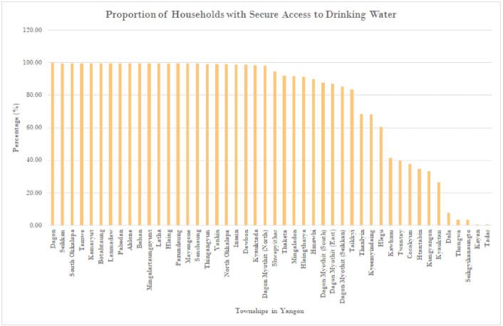

Results and Discussion
Land Surface Temperature
The two LST maps of March and December are depicted using the same temperature class range, to allow for more effective comparison of LST’s role in heat-stress vulnerability across the two months ofin different seasons. As depicted in the Figure 2.1, Yangon townships experience a higher temperature in March compared to December, with temperatures reaching more than 35°C in the Western and Southern townships in March. Surprisingly, in contrast to March, higher temperatures are experienced by the Eastern townships in December, albeit having an overall lower temperature. This shows that there is a big variation in heat vulnerability across different seasons. We are unable to conclusively determine factors affecting LST, as it is out of the scope of our study.
Advantages of our method:
- Using townships as an enumeration unit allows us to easily observe and identify the individual townships that require attention so that the local town authorities can utilise their resources and work on improving the vulnerability of their township through better mitigation strategies.
- Using the same scale of analysis helps us observe the changes in temperature across different seasons yet allow us to identify the areas with higher LST clearly.
Limitations of our method:
- Township as an enumeration unit may be too large and may present inaccuracies: Temperature is a continuous phenomenon and not uniform throughout the entire township. Thus, calculating mean for respective townships may not be representative of temperature variations experienced within each township.
- Raster data obtained from Landsat LST is not representative of microscale climates which affect heat-stress.
- The number of LST classes that should be used in our map analysis cannot be accurately determined.

Figure 2.1: Generated Map of Average LST by Township for Yangon (2015)
Social Vulnerability
Variables under Sensitivity and Adaptive capacity were used in generating the social vulnerability map (Figure 2.2). Following other studies (Inostroza et. al., 2016; Johnson et. al., 2012; Reid et. al., 2009; & Huang et. al, 2011), we selected the townships within the three most vulnerable classes (Moderately Vulnerable, Very Vulnerable and Most Vulnerable) to be used in our analysis of heat-stress vulnerability. Other townships mostly demonstrate “Somewhat Vulnerable” to “Neutral” social vulnerability which are of less immediate concern.

Figure 2.2: Social Vulnerability Map for Yangon, Myanmar
The map indicates that townships in southern Yangon have the highest social vulnerability. These townships are mostly located in rural areas, where socioeconomic conditions are less favourable (e.g. limited access to water in Kayan and Thongwa, Figure 2.3). Central Yangon townships experience the lowest social vulnerability, perhaps owing to better socioeconomic conditions in urban environments (e.g. employment) and greater adaptive capacity (e.g. accessibility to water).
However, it is surprising that the other rural towns in the north do not experience similar social vulnerability. Looking at the trends of the social variables, and taking into account the different weightages of the variables, we deduce that the northern Yangon townships’ (Hlegu, Htantabin, Twantay and Taikkyi) relatively higher accessibility to water (Figure 2.3) accounts for their low social vulnerability to heat-stress.
Figure 2.3: Bar-Chart Showing Proportion of Households with Secure Access to Drinking Water in Yangon
Advantages of our method:
- The Analytical Hierarchy Process (AHP) method is a good method to employ because it assigns relative importance to the social variables instead of assigning them with absolute values which are difficult to justify.
- Creating only seven vulnerability classes in our map allows us to narrow our scope and determine the regions where government intervention is most needed.
Limitations of our method:
- AHP is often a value judgement that is susceptible to changes, e.g. environmental, policy, economic and demographic changes in Yangon. For example, if there are better medical facilities in Yangon, then the importance of disability in contributing to social vulnerability would be smaller as compared to the other social variables.
- Difficulty in obtaining all relevant socio-economic data for Yangon. E.g. Income levels.
- The number of classes created for each vulnerability classes cannot be accurately determined.
- The higher the number of classes, the greater the distinction in vulnerabilities among townships. This helps the government to better pinpoint townships that require aid. However, the number of classes must also not be too high as it would make it difficult for the vulnerable townships to stand out in the map.
Heat-Stress Vulnerability
The socially vulnerable areas selected were overlaid with the average LST map to identify townships which are both high in LST and socially vulnerable in both the warm and cool seasons. This is depicted in our heat-stress vulnerability map (Figure 2.4). Townships which experience the highest heat-stress vulnerability are located in the southern regions of Yangon. These areas that experience highest heat-stress vulnerabilities are mostly outside the city areas and mostly in the rural regions of Yangon.

Figure 2.4: Heat-Stress Vulnerability Map for Yangon, Myanmar
The socially vulnerable areas selected were overlaid with the average LST map to identify townships which are both high in LST and socially vulnerable in both the warm and cool seasons. This is depicted in our heat-stress vulnerability map (Figure 2.4). Townships which experience the highest heat-stress vulnerability are located in the southern regions of Yangon. These areas that experience highest heat-stress vulnerabilities are mostly outside the city areas and mostly in the rural regions of Yangon.
Due to the fact that the range of average LST varies over different times of the year, we conclude that heat-stress vulnerability is also inconsistent across seasons. While social vulnerability is assumed to remain consistent throughout the year, the fluctuations in LST across seasons in Yangon townships makes it difficult for the heat-stress vulnerable townships to be conclusively determined. Hence, we chose townships with both the highest social vulnerability and relatively high LST (may not be the highest in both seasons due to large temperature variations) throughout the year to be identified as the most heat-stress vulnerable. Perhaps other studies can make use of monthly heat exposure data of Yangon townships instead of merely working on data obtained on two different months to give a better illustration on the heat-stress vulnerability in these areas.
By identifying these potentially vulnerable townships in Yangon, the local government can formulate suitable policies and allocate resources to address the heat-stress issues within communities during different times of the year. Following the heat-stress vulnerability framework mentioned earlier, Exposure (i.e. LST) as an indicator is often difficult to alter (i.e. natural climate circumstances), as opposed to a population’s Sensitivity and Adaptive Capacity. Therefore, identifying areas which are socially vulnerable to heat-stress according to certain social variables, is perhaps more useful and relevant to authorities and policy makers.
Advantages of our method:
- In selecting only 5 variables, we can specifically identify and address the selected variables in each township that influences the impact on heat-stress vulnerability.
Limitations of our method:
- Difficulty in finding out whether LST or socio-economic factors is more important in heat-stress vulnerability.
- LST and demographic data in township units may compromise the details and resolution of these data. However, due to the lack of data in smaller administrative units, we are unable to improve data resolution and make them finer for our discussion and analysis.
“By identifying these potentially vulnerable townships in Yangon, the local government can formulate suitable policies and allocate resources to address the heat-stress issues within communities during different times of the year.”
Policy Recommendations
- As observed, different seasons have potentially varying heat vulnerabilities. Therefore, given limited resources, the Yangon authorities should allocate heat-stress mitigation strategies appropriately according to season.
- This study also revealed the various townships which were vulnerable as seen in the selected socioeconomic variables. This is not exhaustive, but can serve as a starting point for policymakers to identify interventions targeted at improving socioeconomic conditions of such townships. This includes:
- Improving socioeconomic conditions in rural areas such as access to water supply and amenities to reduce their vulnerability to heat-stress.
- Improving facilities that cater to vulnerable groups such as the physically-handicapped or the young and elderly. Implement policies to induce demographic changes so that rural areas have a lower dependency.
- In addition to heat intervention strategies, authorities can also look at improving initial heat exposure for Yangon. The government can consider measures such as urban greening (Pearsall, 2017), increasing albedo of roofs, and considering land-use / land cover in light of reducing LST.